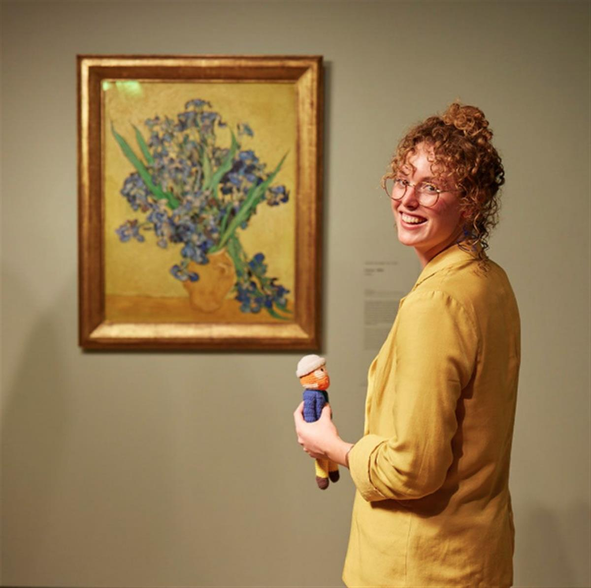
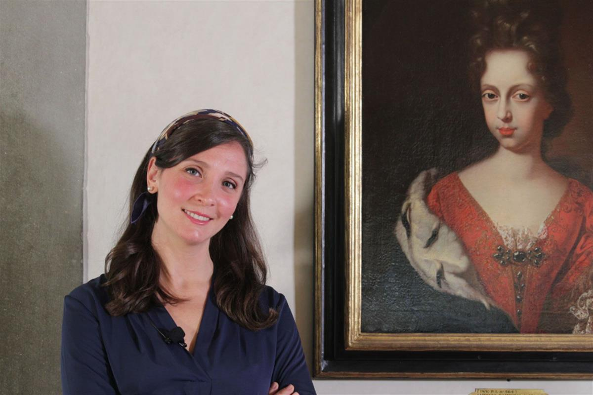

SOURCE: THE ART NEWSPAPER
Going viral, the right way: what it's like running the world’s best museum social media accounts during a pandemic
We asked the people behind the Royal Academy’s Twitter, the Met’s Instagram, the Uffizi’s TikTok and the Van Gogh Museum’s Facebook account what 2020 was like for them
1st April 2021 16:36 BST
While museums around the world saw a staggering 77% fallin visitors last year due to pandemic lockdowns and restrictions, their social media followers grew as they became the primary way for them to keep in touch with audiences. And several social media teams rose to the challenge, creating viral content to delight and inform audiences around the world.
We spoke to the people behind four of the best accounts about what it's like to go viral.
Royal Academy of Art’s Twitter
Adam Koszary, social media and editorial content manager at the Royal Academy of Arts
Adam Koszary, social media and editorial content manager
What are the advantages of Twitter compared with other types of social media and what has been the biggest challenge in communicating with your audience over the past year?
For me, Twitter embodies what the museum and gallery experience should be at its best. They’re meant to be forums for meaning-making and discussion, and it feels like Twitter is one of the only places where you can have that back-and-forth discussion, debate and sharing. Everything seems to move much faster on Twitter compared with other channels too, so one of the biggest challenges is simply keeping up with what’s trending—we’re either up against some of the most creative and funny people in the world or extremely well-resourced brands, and our challenge is to stand out when there’s so much competition. It helps when you have world-class art and artists, but you’ve still got to go the extra mile to make it relevant to different people.
What has been the biggest challenge over the past year?
It’s a challenge but also an opportunity: keeping the passion for art alive. Museums and galleries are physical spaces where we interact with physical things, so when that was taken away we had to really focus on our core mission: celebrating art and artists. We managed to keep that flame going with home activities, celebrating our young artists and providing virtual tours of our closed exhibitions, but it’s a challenge coordinating all that from kitchen tables.
What was the RA’s most liked/shared tweet of 2020?
In terms of engagement, it would be our tweet of the Tiger King himself within Henri Rosseau’s Surprised! (1891) painting. In terms of how many people it reached, it was when we asked people to draw us a ham, which spawned our daily drawing challenge #RADailyDoodle.
What was your favourite tweet of 2020?
There were a lot of good ones about Barnard Castle [Dominic Cummings, the former chief advisor to UK Prime Minister Boris Johnson was caught driving to Barnard Castle during the first Covid-19 lockdown last year], but I’ll plump for Yorkshire Museums’ #CuratorBattle, where they asked other museums to compete for the best object on a theme: #CreepiestObject had dead pigs, decaying faces in ivory, automaton monkeys and dissected cats in fluid.
Did any of your 2020 tweets go viral?
Depends on the definition of viral, but it would probably be the ham one above! Otherwise, we had our most popular tweet ever recently about a robin in our Young Artists’ Summer Show 2020.
The Metropolitan Museum of Art’s Instagram
Claire Lanier, senior social media manager at the Metropolitan Museum of Art Courtesy of Claire Lanier
Claire Lanier, senior manager of social media
How has the role of the Met’s Instagram changed since the pandemic began last year?
We’ve always been a resource for Met-lovers across the world (many of whom may never visit us in person) but that was really magnified over the past year. Artists and art fans alike were looking at art in new contemplative and emotionally fulfilling ways, and we sought to reflect those perspectives on Instagram through our collection. But outside of functioning as a space for showcasing the Met’s artworks and programmes, Instagram has been a really important platform for sharing the many voices of our staff and community as they reflected on isolation and deepened their own personal connections to art, and canvassed the empty galleries while caring for the collection.
We also began providing new kinds of windows into our galleries and spaces at a time when few people, even regionally, can visit, and have been amplifying the creativity and experiences of our followers and visitors through artistic challenges and campaigns.
What has been the biggest challenge over the past year?
Stamina and burnout, like so many others have experienced or are experiencing. In an exceedingly challenging year, how can we consistently uplift, educate, and even entertain our followers while staying sensitive to the very real tragedies around us? How do we find a way to be there regularly and keep pace with the social conversation without contributing to an already overwhelming environment? These are all questions we ask often, including how do we, ourselves, maintain a work/life balance when our global social media presence never sleeps.
What was the Met’s most popular Instagram post of 2020?
Four of our top six performing posts of the year (including spots no. 1 and 2) are from our #MetTwinning campaign. The creativity of art-lovers at home was absolutely astounding and inspiring. This post takes the top spot.
What was your favourite post of 2020?
Pug as unicorn is very tempting, but I'd have to go with the post we shared on the day we reopened. Photographer Taylor Hill captured this extremely incredible moment of a visitor with his arms outstretched as he enters the Great Hall. The joy, the relief, the physical openness, the sincere overwhelm of stepping back into the museum after months of lockdown—it’s so powerful and spoke to exactly how we were all feeling.
Did any of your 2020 posts go viral?
Our #MetTwinning campaign lasted for weeks on end, our phones dinging nonstop. We had to share them in carousel roundups because there were so many contributions!
Van Gogh Museum’s Facebook

Boudewien Chalmers Hoynck van Papendrecht, social media manager at the Van Gogh Museum
Boudewien Chalmers Hoynck van Papendrecht, social media manager
What are the advantages of Facebook over other social media and what has been the biggest challenge in communicating with your audience over the past year?
As a museum but also as a Vincent van Gogh knowledge institution, we have always aimed to integrate our website and social media into one big digital Van Gogh world. The advantage of social media in general is the fact that you can reach anyone at anytime from anywhere. In a pandemic year that is more needed than ever. Social media was like a lifeline. It was one of the few ways we could reach our audiences and inspire people with stories from the Van Gogh Museum, as well as also staying in touch and having conversations. The challenges that we faced were getting the right information distributed to the right people about, for example, the closing and reopening of our museum.
How has your job changed since the pandemic began last year?
As the Van Gogh Museum was closed, the social media channels were one of the few routes of communications, therefore there was much more demand for social media content. Almost every project or piece of information needed to be routed through social media. As I said, we don’t have influence on what is shown to whom, so I became much more of a traffic controller. Focusing on our pages staying healthy, growing and engaged but also keeping up with the museum’s internal wishes.
What was the Van Gogh Museum’s most popular post of 2020?
Well, that’s hilarious. It’s a #Caturdaypost. Can’t beat that, right?
What was your favourite Van Gogh Museum Facebook post of 2020?
We really had a blast with our Vincent Birthday Bake Off. On 30 March we challenged our followers to bake a cake in celebration of Vincent’s birthday. We were so happy to see we could make so many people forget about the pandemic for a bit, get creative and smile. One follower even made an inspired drawing.
Did any of your posts in 2020 go viral?
Yes, we are very lucky as Vincent inspires and lives on in daily lives all over the world. As you might see a trend here, the #VanGoghInspires content reaches an enormous amount of people and gets a lot of engagement. Posts reaching over a million people were Do you have Van Gogh inspired street art in your city? , Vincent van Gogh Birthday Bake-Off and our 4K [resolution] tour of the museum.
Gallerie degli Uffizi’s TikTok

Ilde Forgione, TikTok account manager at the Gallerie degli Uffizi